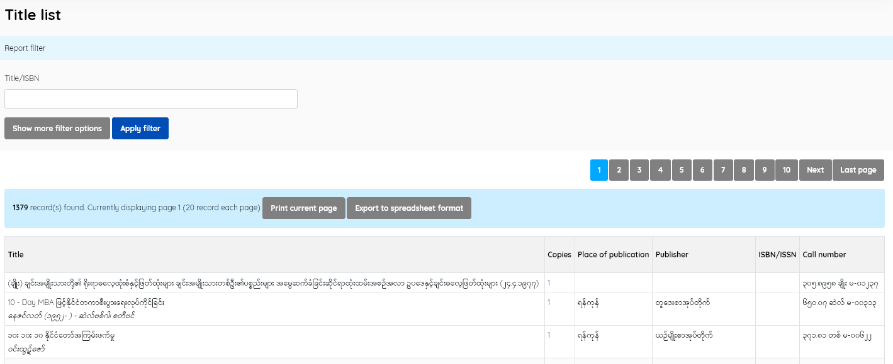
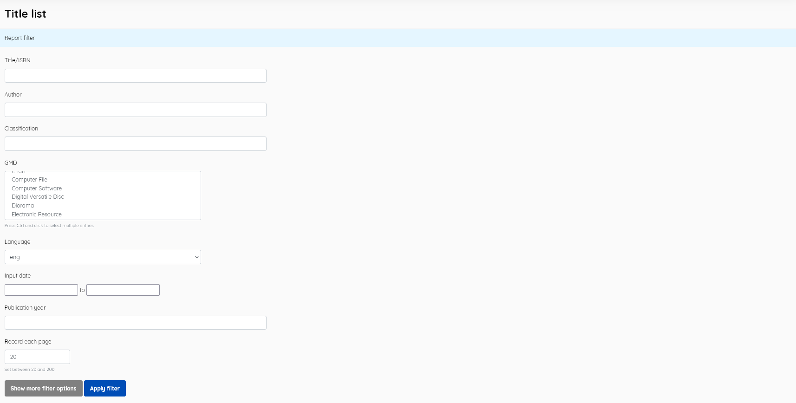

Contains reports/lists of titles held by the library.
Information displayed is:
Title
Copies
Place of publication
Publisher
ISBN
Call number

In this menu there is a facility to sort and print, as well as a collection of desired filters. In this menu, filtering can also be done by writing the Title/ISBN, or by other filters. You do this by clicking Show More Filter Options. Existing filters are:
and the number of records output per page can be specified

Note: a number of the other reports use a similar display, so screenshots are not currently included for them.